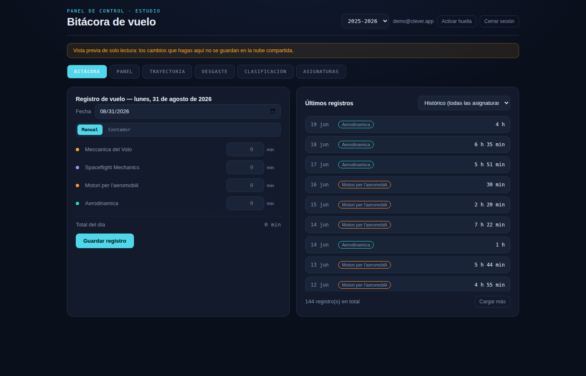
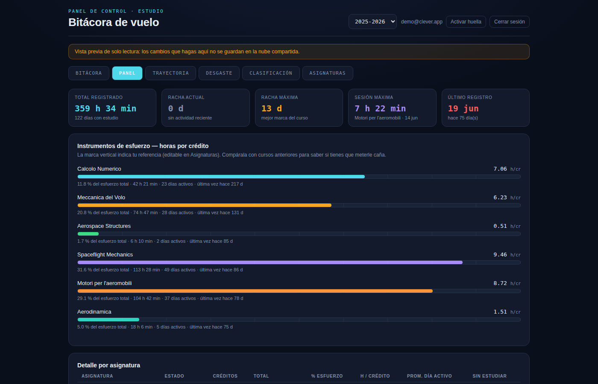
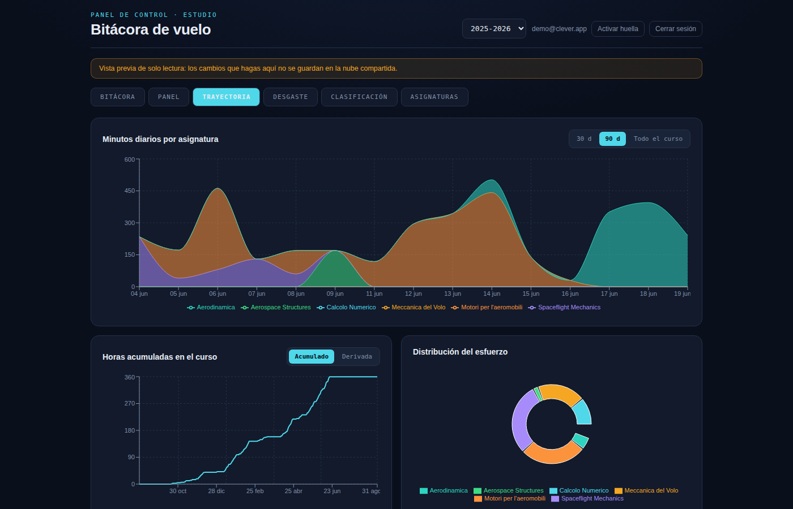
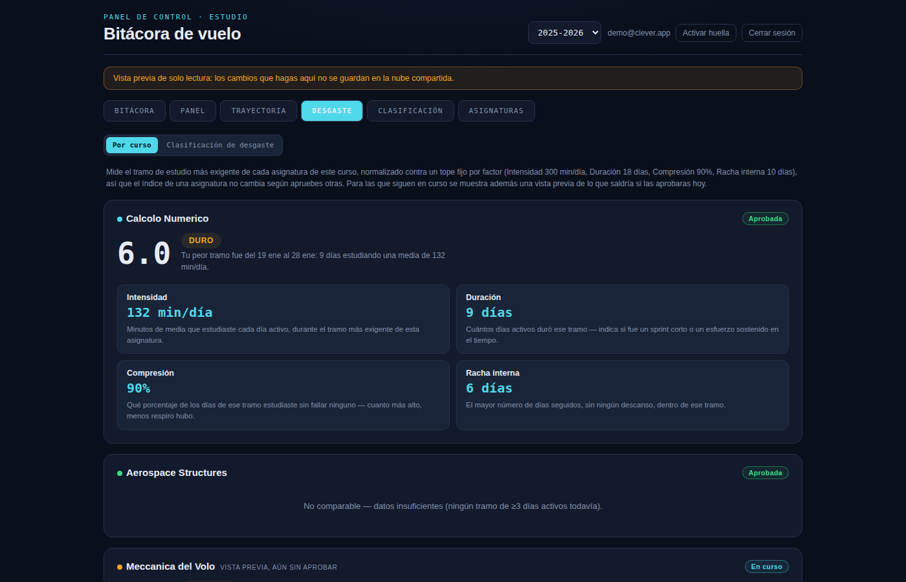
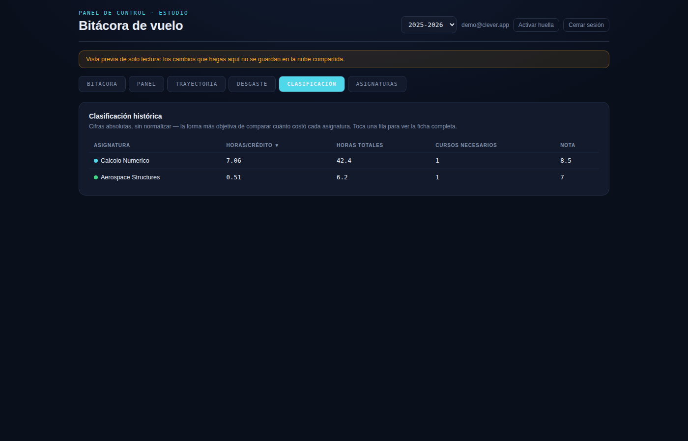
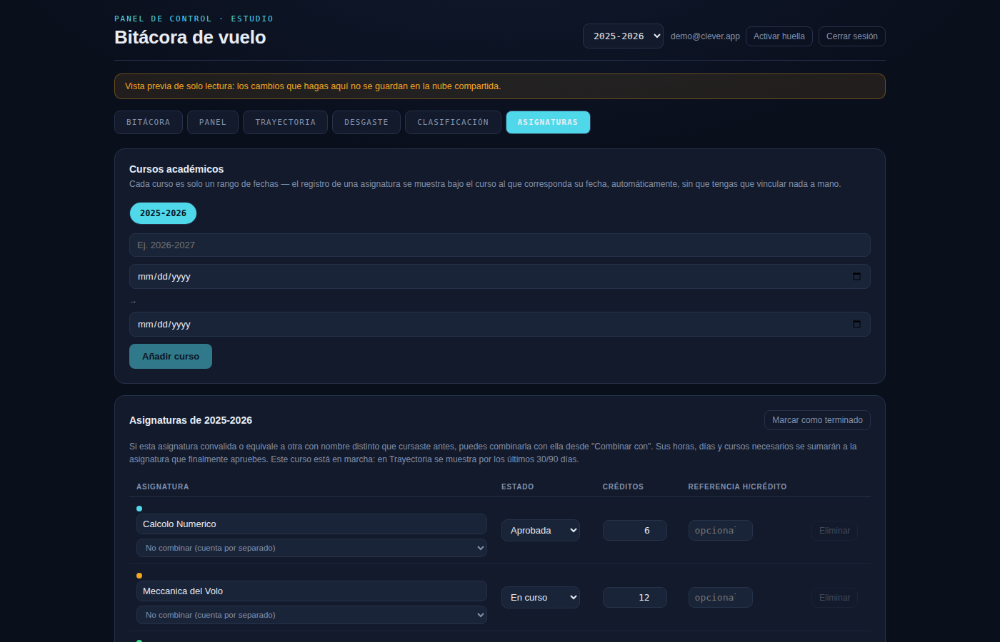

Cada pestaña de Clever, explicada
Capturas reales de la app y qué significa cada dato que ves en pantalla. Los nombres de asignatura de estas capturas son de ejemplo — lo importante es cómo se leen los números.
Bitácora
Es la única pantalla donde introduces datos — todo lo demás en la app se calcula a partir de aquí. Eliges el día, y anotas los minutos de cada asignatura en modo manual, o usas el cronómetro integrado mientras estudias para que se registre solo.

A la derecha tienes el listado de últimos registros, filtrable por asignatura o en modo histórico con todas — útil para revisar rápido qué has estudiado sin salir de la pantalla de registro.
Panel
El resumen del curso activo: total de horas registradas, racha actual y máxima de días seguidos estudiando, tu sesión más larga y cuándo fue tu último registro.

Debajo, la sección "Instrumentos de esfuerzo — horas por crédito" es la más útil para interpretar: cada barra es tus horas invertidas dividido entre los créditos de la asignatura, con una marca vertical que indica tu propia referencia (la editas tú mismo desde Asignaturas). Si la barra pasa la marca, vas por encima de lo que sueles necesitar en esa asignatura; si se queda corta, todavía estás por debajo.
Trayectoria
La evolución de tu estudio a lo largo del tiempo, en tres gráficas. Puedes acotar la vista a 30 días, 90 días o todo el curso.

- Minutos diarios por asignatura: un área apilada que muestra qué estudiaste cada día — sirve para detectar de un vistazo los picos previos a un examen y los bajones de actividad.
- Horas acumuladas en el curso: una curva siempre creciente; cuanto más pronunciada su pendiente en un tramo, más intensidad tuviste esos días. Se puede ver en acumulado o como derivada (el ritmo diario en sí).
- Distribución del esfuerzo: qué porcentaje del total de horas del curso se ha llevado cada asignatura hasta ahora.
Desgaste
El índice de desgaste mide el tramo de estudio más exigente que has tenido en cada asignatura — no el total de horas, sino lo dura que fue tu peor racha con ella. Se calcula combinando cuatro factores, cada uno normalizado contra un tope fijo que es igual para todas las asignaturas de todos los usuarios, así que el número no cambia según lo que hagas en el resto de tus asignaturas.

Los cuatro factores y su peso en el resultado final:
Cada factor llega a 10/10 al alcanzar su tope (por ejemplo, 300 min/día de media ya puntúa el máximo en intensidad, estudiar más ese tramo no sube más ese factor). La suma ponderada da un número de 0 a 10, que se traduce en una etiqueta:
La vista "Clasificación de desgaste" dentro de esta misma pestaña ordena todas tus asignaturas del curso de más a menos dura, usando este mismo índice.
Clasificación
El histórico de tus asignaturas ya aprobadas, ordenado por horas por crédito — la forma más objetiva de comparar cuánto te costó cada una, en cifras absolutas y sin normalizar. Cuantos más créditos y menos horas necesitaste, mejor te salió la relación esfuerzo/crédito.

Cada fila muestra también las horas totales invertidas, cuántos cursos necesitaste para aprobarla y la nota final — toda la ficha de una asignatura pasada, en una sola tabla.
Asignaturas
La pantalla de administración: aquí gestionas tus cursos académicos (cada uno es simplemente un rango de fechas) y tus asignaturas dentro de cada curso — créditos, estado (en curso, suspendida o aprobada) y tu referencia de horas/crédito personal, la misma que aparece marcada en el Panel.

Si una asignatura equivale a otra que cursaste con otro nombre (por ejemplo, una convalidación o un Erasmus), puedes combinarlas con "Combinar con": sus horas se suman a la asignatura final sin duplicar filas en el resto de pestañas.